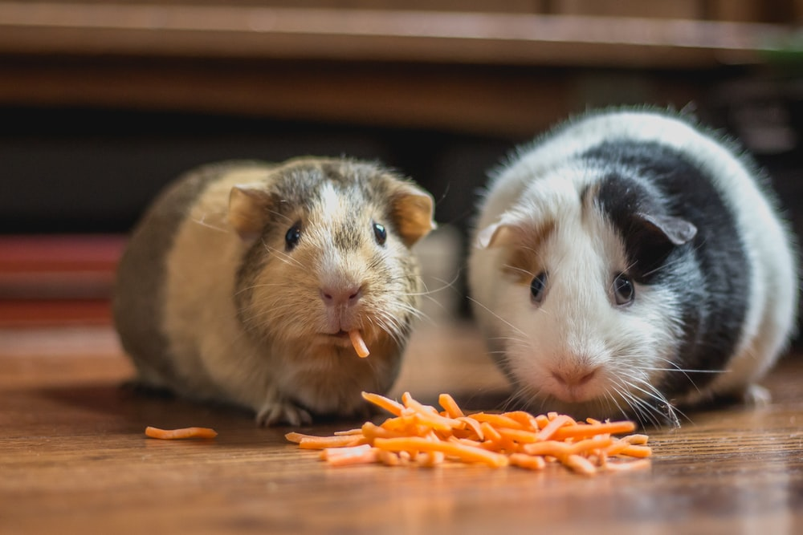

Small-Animals
Small-animal owners
Sometimes we want a pet in our life but think it’s impossible because we are not home enough to take care of it, or we don’t have enough room. Consider adopting a small animal such as a hermit crab, mouse, gerbil, hamster, guinea pig, or even a chinchilla!
Depending on which type of animal you adopt, you can provide a comfortable environment using anything from small to large cages or glass aquariums. You will also need to provide amenities for your new pet, such as bedding or substrate, toys, an exercise wheel, a water dish or drip bottle, a food dish, and grooming equipment. You also need to consider if your new pet will need a friend or if it will be happy living alone.
Our “Pexperts” are here to help you decide which pet is right for you and how to provide them with a happy home. Schedule a consultation with us today!
Request a consultationBirds
Birds are very social creatures. They can become bored or depressed if their environment doesn’t allow them to socialize.
Signs of depression may include:
- Reduced appetite
- Aggression
- Feather plucking
Be sure to tell your veterinarian if you see signs of depression. There could be a medical reason for the behavior.
A certified “avian veterinarian” will perform diagnostics to determine the reason for changes in behavior.
If depression is confirmed, the veterinarian may recommend changes to the cage, diet, or environment.
Fish
Fish represent a broad class of aquatic animals. Most fall into one of two categories: freshwater or saltwater.
Freshwater fish (e.g., goldfish, betta fish) live in non-salty water such as lakes and rivers.
Saltwater fish (e.g., clownfish, sea urchins) live in the ocean and require saltwater aquariums.
Properly maintaining the pH level is crucial for fish in an aquarium. Most fish thrive in a water pH level between 6.8 and 7.6.
Ammonia is extremely harmful to fish; when a fish is exposed to ammonia for a long period of time, it can become very ill.
It’s recommended to keep ammonia levels at or below 0. When this is not possible, 1.0 ppm is a safe maximum threshold for short periods of time.